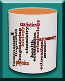

Book Details
Understanding Databases
Concepts and Practice, 1e
Suzanne W. Dietrich,
Copyright 2021
ISBN 978-1-119-58064-5
Wiley Companion Website:
https://www.wiley.com/go/dietrich/databases1e
WinRDBI Website:
http://winrdbi.asu.edu
The goal of this book is to provide an introduction to databases to a diverse audience, incorporating fundamental concepts and essential practice. The succinct presentation of the underlying formalism forms a strong foundation for its application to solving problems. Visual components are integrated throughout the text, including the use of a visual relational schema linking primary and foreign keys to highlight referential integrity. Summary figures and tables provide an overview of essential information. Practice is an integral component of the text with a variety of solved real-world problems at the end of each chapter. Formative self-assessment is also incorporated through self-check questions at the end of each section.
The appendix describes the WinRDBI educational tool, which provides an interpreter for the relational database
query languages described in the book: relational algebra, domain and tuple relational calculus, and SQL
(see http://winrdbi.asu.edu).
The book's companion website
(https://www.wiley.com/go/dietrich/databases1e)
includes the checked queries from the book so that
the reader can check the results of the queries using the tool.
(These queries are also available on the
WinRDBI
samples page.)
The database and queries are provided for four database
enterprises in the four query languages recognized by the tool.
In addition to the WinRDBI educational tool, there are also visualizations available (databasesmanymajors.faculty.asu.edu) to introduce fundamental database concepts to diverse majors as mentioned in the text's More to Explore feature.
|  |
There are three visualizations:
|
Each visualization provides a choice of context for exploring databases beyond the default example of students taking courses, e.g., astronomy, baseball statistics, computational molecular biology, environmental science/ecology, forensic science, geographic information systems, and neuroinformatics.
Learning Objectives: Listed at the beginning of each chapter describing learner goals.
Margin Notes: Notes in the margin highlight important aspects in the textual description.
Self-Check Questions: Formative self-assessment questions in each section for students to test their understanding as they read with answers included at the end of the chapter.
Interactivities (eBook only): Multiple-choice questions integrated in the eBook for additional formative self-assessment opportunities.
Boxed Content: Special Topic, Algorithm, How To, Syntax, and Note boxes interspersed to emphasize valuable knowledge.
Chapter Notes Summary: Margin notes revisited at the end of the chapter, reviewing its storyline.
Chapter Reminders: Summary figures and tables that highlight fundamental chapter knowledge.
Practice Problems: Essential practice of problem-solving applied to a variety of real-world scenarios.
End of Chapter Exercises: Exercises that instructors can assign students to apply their knowledge.
Bibliographic Notes: Relevant foundational references for the chapter knowledge.
More to Explore: Hints to students on additional topics to explore, going beyond the chapter's presentation.
1 Introduction to Databases and the Relational Data Model
2 Conceptual Design
3 Relational Algebra
4 Relational Calculus
5 SQL: An Introduction to Querying
6 SQL: Beyond the Query Language
7 Database Programming
8 XML and Databases
9 Transaction Management
10 More on Database Design
A WinRDBI